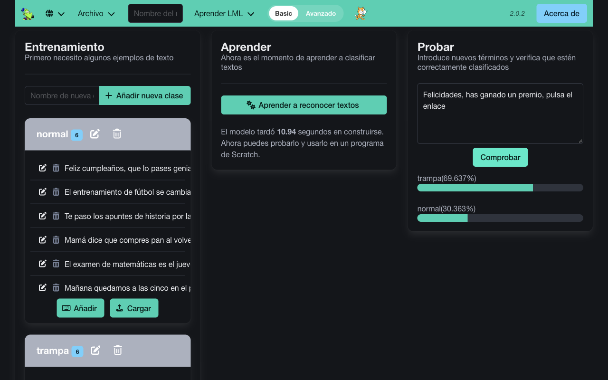

Tarea 3 de 3. Se entrega en Classroom, en la tarea «Tarea 3 · Enseña a la máquina».
Qué vas a hacer
Vas a enseñar a un ordenador a distinguir mensajes trampa (los que intentan engañarte, como los que viste en la tarea 1) de mensajes normales. No le vas a dar reglas: le darás ejemplos, y él aprenderá a partir de ellos. Así funciona el aprendizaje automático, la base de muchas inteligencias artificiales.
- Tiempo: unas 3 o 4 horas, en varios ratos si quieres.
- Qué necesitas: un ordenador con internet. Usarás LearningML, que funciona en el navegador, sin cuenta y sin cámara.
- Qué entregas: el documento de la tarea de Classroom, con dos capturas, una tabla de pruebas y tres respuestas.
Las tres fases de una máquina que aprende
- Entrenamiento: le das muchos ejemplos ya clasificados («esto es trampa», «esto es normal»).
- Aprendizaje: el programa busca en esos ejemplos lo que se repite en cada grupo.
- Prueba: le das mensajes nuevos, que no ha visto nunca, y comprobamos si acierta.
Paso a paso
Paso 1 · Abre LearningML
- Abre el editor de LearningML. Se abre en español.
- Pulsa la tarjeta «Reconocimiento de textos».
- En el cuadro «Nombre del modelo» de la barra de arriba, escribe
mensajes.
La pantalla tiene tres zonas, que son las tres fases: Entrenamiento, Aprender y Probar.
Paso 2 · Crea las dos clases
Una clase es cada grupo en el que la máquina tiene que clasificar los mensajes.
- En la zona Entrenamiento, escribe
trampaen «Nombre de nueva clase» y pulsa «Añadir nueva clase». - Repite con
normal.
Paso 3 · Escribe los ejemplos
- En la clase trampa, pulsa «Añadir». Se abre la ventana «Añadir uno o más ejemplos de texto».
- Escribe un mensaje por línea (pulsa Intro entre uno y otro) y pulsa «Añadir ejemplos de texto».
- Haz lo mismo en la clase normal.
Pon al menos 10 ejemplos en cada clase, inventados por ti. Ideas:
- trampa: premios que no has pedido, prisa y amenazas, que te pidan contraseñas o códigos, pagos raros para recibir un paquete…
- normal: mensajes de tus amigos, de tu familia, de clase, de tu equipo…
Cuanto más variados sean los ejemplos, mejor aprenderá.
Paso 4 · Que aprenda
En la zona Aprender, pulsa «Aprender a reconocer textos». Tarda unos segundos; cuando acabe, te dirá cuánto ha tardado en construirse el modelo.
Paso 5 · Pruébalo con mensajes nuevos
- En la zona Probar, escribe un mensaje nuevo, que no esté entre tus ejemplos.
- Pulsa «Comprobar». Verás el porcentaje de confianza de cada clase.
- Haz 4 pruebas, dos con mensajes trampa y dos normales, y apunta los resultados en la tabla del documento.
Así queda la pantalla (con unos pocos ejemplos; tú pon al menos 10 por clase y escribe los tuyos, no copies estos):

Ampliar imagen (nueva pestaña)
Cómo leer la confianza
El modelo nunca dice «esto es trampa». Dice «estoy un 70 % seguro de que es trampa».
- Más del 80 %: lo tiene claro.
- Entre el 60 % y el 80 %: va justo.
- Menos del 60 %: está adivinando.
Si duda o se equivoca, añade más ejemplos parecidos al mensaje que falló y vuelve a pulsar «Aprender a reconocer textos». ¡Eso es entrenar mejor a una máquina!
Paso 6 · Haz las dos capturas
- La zona Entrenamiento con tus dos clases y sus ejemplos.
- Una prueba en la zona Probar, con sus porcentajes.
¡Ojo! LearningML no guarda tu trabajo
Si cierras la pestaña, se pierden tus ejemplos. Si vas a dejarlo a medias, usa Archivo → «Guardar conjunto de datos en tu ordenador». Otro día, recupéralo con Archivo → «Subir conjunto de datos desde tu ordenador» y vuelve a pulsar «Aprender a reconocer textos».
Cómo entregar
- Entra en Google Classroom, en la clase de la recuperación, y abre la tarea «Tarea 3 · Enseña a la máquina».
- Abre el documento que trae la tarea: ya es tu copia.
- Pega las dos capturas (Insertar → Imagen → Subir desde el ordenador), rellena la tabla de pruebas y responde a las tres preguntas.
- Pulsa «Entregar».
Después recibirás comentarios. Si quieres mejorar tu trabajo, puedes hacerlo mientras la tarea siga abierta: pulsa «Anular entrega», cambia lo que haga falta y vuelve a pulsar «Entregar».
¿Tienes dudas? Escríbelas en un comentario privado dentro de la tarea.
Cómo se califica
Esta tarea cuenta para un aprendizaje, con su nota de 0 a 10.
| Aprendizaje | En qué se fija quien corrige |
|---|---|
| Entender cómo aprende una máquina | Tu modelo tiene dos clases con al menos 10 ejemplos propios en cada una. Las 4 pruebas están apuntadas con su porcentaje. Explicas que la máquina aprende de ejemplos, no de reglas. Explicas por qué falla o duda y cómo lo mejorarías, y piensas en lo que podría salir mal si una máquina decidiera sola. |